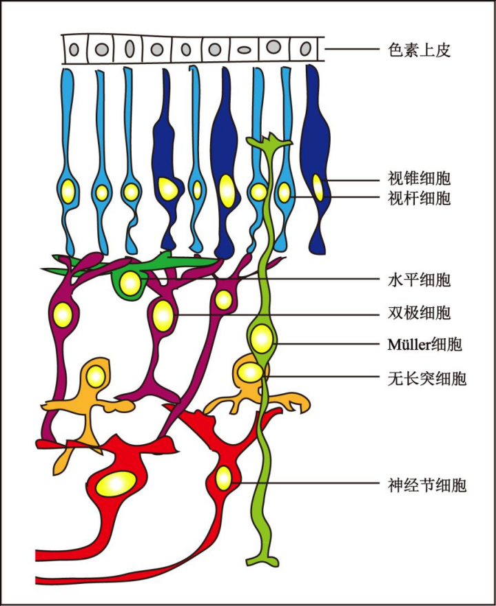
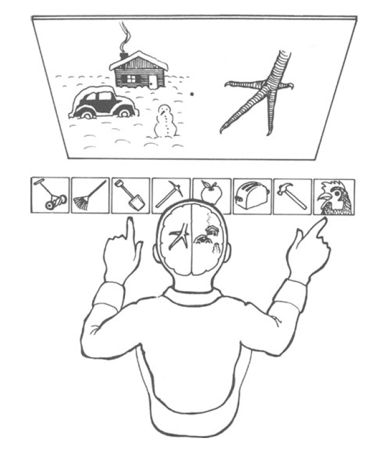

Does our cognition faithfully reproduce the environment? Insights from neurobiology and psychology.
Abstract The human cognitive process involves sensation, attention, and language. The findings from neurobiology and psychology reveal that human perception is a reconstruction of environmental stimuli rather than a mere replication or reproduction. The human brain allocates different intensities of attention to various stimuli from the environment, and it possesses the ability to generate fictional narratives that people believe in. All of these findings indicate that human cognition does not faithfully reproduce the objective environment but rather reconstructs it.
1. Sensation and Reconstruction of Environment
Sensation refers to the reaction in the human brain induced by the individual characteristics of objective things (such as light, sound, touch) acting on sensory organs (such as eyes, ears, skin), including vision, hearing, smell, etc. During the process of sensation formation, the sensory organs convert these characteristics of things, such as color and sound, into electrical signals of neurons, which are then integrated and transmitted to the cerebral cortex[4]. Additionally, sensory organs respond to only a small portion of the stimuli in the external environment, such as specific frequencies of electromagnetic waves and sound, rather than all the information from the environment[5]. Therefore, sensation does not reproduce the environment in the brain.

Figure 1. Diagram of the structure of retina. from The Cup of Light: Retina, Xu Baijie, 2019. Institute of Neuroscience, Chinese Academy of Sciences (http://www.cebsit.cas.cn/kpwz/201907/W020190703409762681689.jpg)
Taking visual perception as an example, the retina is a structure located at the back of the eyeball that receives light stimuli and generates electrical signals. It consists of pigment and photoreceptor cells, horizontal and amacrine cells, bipolar cells, and ganglion cells (Fig. 1). The photoreceptor cells include cones and rods, which receive light stimuli and generate electrical impulses. Horizontal cells and amacrine cells integrate the electrical signals generated by photoreceptor cells and transmit the integrated electrical signals to bipolar cells. How do photoreceptor cells convert light stimuli into electrical signals? These cells contain many pigment molecules that decompose when exposed to light, changing the conformation of an enzyme and allowing the enzyme to catalyze the conversion of cGMP to GMP. cGMP is a nucleotide substance that promotes the opening of sodium ion channels on the cell membrane. The reduction in cGMP leads to a decrease in the inward flow of sodium ions, increasing the potential difference between the inside and outside of the cell membrane, thereby generating an electrical signal[9]. In the process of integrating electrical signals, horizontal cells inhibit certain electrical signals from the photoreceptor cells so that the electrical activity is adjusted to an appropriate level. In summary, during the formation of visual perception, light stimuli from the environment trigger a chain of molecular reactions, which are then converted into electrical signals on the cell membrane, and the signals are adjusted and modified before transmitted to the visual cortex.
Furthermore, the human eyes do not receive all the light stimuli from the environment. Firstly, we clearly cannot see what is happening behind our bodies, and our visual field is smaller than that of some herbivorous animals with eyes on two sides of their head. Secondly, the light that the human eye can perceive is a specific frequency range of electromagnetic waves, which is only a small part of all the frequency bands. The environment in which humans exist is filled with various electromagnetic waves of different frequencies (Fig. 2), including ultraviolet rays in sunlight, most of which cannot be converted into electrical signals by the human eyes.

Figure 2. Frequency bands of electromagnetic waves. from electromagnetic radiation, Wikipedia. (https://zh.m.wikipedia.org/zh-cn/File:EM_spectrum_zh-hans.svg)
In summary, the biological mechanism of sensation involves the initiation of molecular reactions by environmental stimuli and the generation of electrical signals, as well as the transmission of electrical signals between neurons. Sensory organs do not convert all the information from the external environment into electrical signals. Therefore, sensation is a process of reconstructing the environment. As the French philosopher Edgar Morin said, "All perception is translation and reconstruction—from stimuli or signals intercepted and encoded by the senses, to translations and reconstructions made by the brain."
2. Attention and Selection by Intentions
The Principles of Psychology by American psychologist William James, published in 1890, is considered a landmark work in the history of psychology. In this book, James dedicated an entire chapter to describe the psychological phenomenon of "attention":
Everyone knows what attention is. It is the taking possession by the mind, in clear and vivid form, of one out of what seem several simultaneously possible objects or trains of thought…. It implies withdrawal from some things in order to deal effectively with others, and is a condition which has a real opposite in the confused, dazed, scatterbrained state….[1]
James William defined attention as having only one out of multiple objects or out of a stream of thoughts occupy the mind. Therefore, one characteristic of attention is selectivity. For example, when you are reading this paragraph, you do not pay attention to the previous section or hear the noise around you. Attention is the process of selectively receiving certain information from the environment while avoiding the processing of other information.
Selective attention is generally divided into bottom-up attention and top-down attention. Bottom-up attention refers to when certain features of an object are particularly salient and capture our attention first, and then we process the information about that entire object. For example, the image below (Fig. 3) is the cover of the children's comic book Where's Wally created by British artist Martin Handford. As you shift your gaze downwards, you will probably first notice the large text "WHERE'S WALLY?" in the center of the cover, and then you look at other things on the cover, including various cartoon characters and the author's name at the bottom. Top-down attention, on the other hand, occurs when we already have a plan or goal beforehand and anticipate the appearance of a certain object, directing our attention to relevant things. In the book "Where's Wally?", readers are tasked with finding Wally in a crowd of people. Wally is dressed in a red and white striped shirt, wearing a bobble hat, and carrying a cane. During the search for Wally, your attention is allocated to each character, paying particular attention to their dressing and whether they are holding a cane. This is an example of top-down attention[2][3].
Figure 3. Cover of Where’s Willy. (https://www.amazon.com/Wheres-Wally-Martin-Handford/dp/1406305898?asin=1406305898&revisionId=&format=4&depth=1
In top-down attention, we selectively attend to certain characteristics of objects based on the problem we need to solve. This means that we have subjective intentions when processing information from the objective environment. In bottom-up attention, we are expecting for certain features of objects and we first process those features while ignoring other things. Not only is perception a reconstruction of the environment rather than a replication, but attention also allows us to selectively reconstruct certain information from the environment.
3. Inference and Capability of Imagination
Imagine you and your friend went to the cinema on a sunny afternoon. When you entered the cinema, the sky was clear. After watching the movie and walking out of the theater, you noticed that the sky has turned cloudy, and the air felt humid, with wet ground everywhere. Naturally, you thought, "It rained while I was watching the movie." This inference is sometimes so unconscious that you might spontaneously say to your friend just the moment you walked out, "Oh! it rained just now," without realizing that it is a conjecture based on your observation, a fictional story. You didn't actually witness any raindrops falling from the sky. People have the ability to imagine stories and believe in fictional narratives. Furthermore, fiction doesn't necessarily involve purposeful lying; it can be a natural expression that seems reasonable.
In the 1960s and 1970s, research on the lateralization of the brain was thriving. The renowned cognitive scientist Michael S. Gazzaniga and others conducted a lot of research on the split-brain. The corpus callosum is the neural tract that connects the left and right hemisphere of the brain. "Split-brain" individuals refer to patients who have had their corpus callosum severed as a treatment for epilepsy, resulting in the inability for information to pass between their left and right hemisphere. One of the classic examples demonstrating the imagination capacity of the human brain is the psychological experiment conducted by Michael Gazzaniga and Joseph LeDoux with a split-brain patient named P. S. In this experiment, a picture of a chicken claw and a snowy landscape flashed for milliseconds in front of P. S.'s right and left eyes, respectively (Fig. 4). Then P. S. was asked to pick up one picture related to the snow and one related to the chicken claw with his left and right hand. P. S. correctly picked up the picture of a shovel with his left hand and the picture of a rooster with his right hand. However, when asked why they chose those pictures, P. S. did not answer, "I picked up the shovel to clear the snow," but instead said, "I saw a chicken claw, so I picked up a picture of a chicken, and then you need to use the shovel to clean the chicken coop." [7]

Figure 4: The split brain human experiment. The subject picked up a picture of a shovel with their left hand and a picture of a rooster with their right hand. In the eyes of healthy individuals with intact brains, shovels and roosters are respectively associated with snow and chicken feet, and the response from the participants is "cleaning the chicken coop with a shovel". from The Integrated Mind (p149), Gazzaniga, M. S., LeDoux, J. S. 1978. Plenum.
At that time, psychologists already knew that the images received by the eyes are processed in the opposite hemisphere of the brain. The images of the snowy landscape and the chicken claw were formed in P. S.’s right and left hemisphere, respectively. The right hemisphere associated the snow with the shovel and then instructed the left hand to pick up the picture of the shovel. The left hemisphere associated the chicken claw with the rooster and then instructed the right hand to pick up the picture of the rooster. However, due to the severed corpus callosum, the right hemisphere couldn't transmit the reason why the shovel and the snow should be associated to the language center in the left hemisphere, so P. S. didn't say, "Clear the snow with the shovel."
The key point is that the P. S.’s left hemisphere associated the action of picking up the shovel with the image of the chicken claw and naturally said, "Clean the chicken coop with the shovel," without any tension or unnatural behavior. This means that the language system of P.S. involuntarily establishes connections between the received information, piecing together for a coherent narration.
In addition to the experiment conducted with P.S., researchers have conducted many other psychological experiments with split-brain patients. Interestingly, in all these experiments, the left hemisphere always constructs a story based on the images seen by the right eye and events that occurred. For example, Michael Gazzaniga also conducted an experiment with another split-brain participant, where negative emotion pictures were presented to her left eye, and her mood became depressed after her right hemisphere received these images. However, the left hemisphere did not know what caused it, and she said it was the experimenter who was making her unhappy[6]. The left hemisphere naturally establishes connections with the observed facts and creates fictional stories.
Summary
This article explains the reconstruction of environmental stimuli using the biological mechanism of vision as an example. I also illustrate how the attention mechanism allows us to selectively process information from the environment using the example of looking at the cover of a comic book. The psychological experiments of split-brain individuals demonstrate our ability to create fictional connections. Sensation is a reconstruction of information from the environment rather than a mere reproduction. Attention allows our senses to process specific characteristics of things, and the ability to create fictional stories allows further processing of information in the brain after perception. Therefore, our cognition does not faithfully reproduce objective things but reconstructs a part of the information from the environment, directed by subjective desires and personal imagination.
Is the non-objectivity of cognition a drawback of the human brain? When thinking about questions related to cognitive science, an important viewpoint is that the human brain is the result of biological evolution over history. According to Darwinian evolution, the various cognitive functions of our brain today have their evolutionary advantages. For example, James William suggested in his definition of attention that attention is necessary to process certain information more efficiently[1]. Nowadays, psychologists generally agree that the amount of information the human brain can process within a certain time is limited, so it must selectively choose certain specific information to work efficiently. Imagine the scenario of ancient humans hunting. Top-down attention allows them to pay special attention to the appearance of prey, increasing their chance of success in hunting. Therefore, compared to predators that have difficulty allocating their attention to certain animal species, predators that can selectively focus on prey have an advantage in the struggle for survival.
Besides, the brain's imagination ability has been cited by anthropologists to explain the formation of human society. Yuval Noah Harari, in his book A Brief History of Humankind argues that the ability to create and believe in fictional stories is what has allowed humans to establish social order and engage in flexible, large-scale cooperation. "Money is the biggest fictional story created by human." Everyone believes that money can be exchanged for goods, which establishes mutual trust and thus transactions and large-scale trade occur. Religious stories can maintain social order. Christians created stories of heaven and hell, and believe that if they repent to God, they can enter heaven after death. Medieval European peasants couldn't verify the existence of heaven or hell, but they believed that by donating their property to the Roman Church, they could repent to God. This allowed the Roman Church to maintain economic and political dominance in Europe for centuries.
References
[1]James William (1981), The Principles of Psychology. Harvard University press. p381-382
[2]Banich, M. T., Compton, R. J. (2011) Cognitive Neuroscience: Third Edition. Wadsworth. p306
[3]Elliott Jardin. “Top Down vs. Bottom Up Attention” YouTube. 24 Sept 2020. https://www.youtube.com/watch?v=ujxdyQkXGdo
[4]Gazzaniga, M. S., Ivry, R. B., Mangun, G. R. (2019) Cognitive Neuroscience: Fifth Edition. New York: W. W. Norton & Company. p170
[5]Ibid. p171-172
[6]Ibid. p152
[7]Gazzaniga, M. S., LeDoux, J. S. (1978). The Integrated Mind. Plenum. p148
[8]Harari, Y. N. (2014) A Brief History of Humankind. p91-92.
[9]Kandel, E. R., Schwartz, J. H., Jessell, T. M., Siegelbaum, S. A., Hudspeth, A. J. (2013) Principles of Neural Science. Fifth Edition. The McGraw-Hill Companies. p634-635